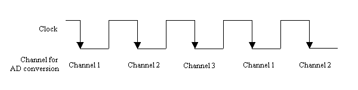
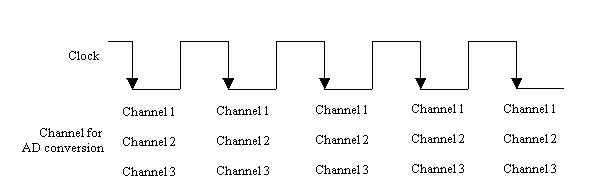

AdSyncSampling
Description
The AdSyncSampling function enables you to achieve a synchronous sampling on boards/cards connected in parallel. The parallel sampling is not supported between different type of boards/cards. You should connect the same type boards/cards by the synchronous cables. Syntax
C
INT AdSyncSampling( HANDLE hDeviceHandle, ULONG ulMode ); Visual Basic
Declare Function AdSyncSampling Lib "FbiAd.DLL" ( _ ByVal hDeviceHandle As Long, _ ByVal ulMode As Long _ ) As Long
Delphi
function AdSyncSampling( hDeviceHandle : Integer; ulMode : Integer ) : DWORD; stdcall; external 'FbiAd.DLL'; Parameters
hDeviceHandle Specifies the device handle obtained by the AdOpen function. ulMode Specifies a role of the board/card, master or slave, by using the following codes exclusively.
Code Value Description AD_MASTER_MODE 1 Master AD_SLAVE_MODE 2 Slave
For the CompactPCI board, synchronous number must be set.
Code Value Synchronous Number AD_SYNC_NUM1 0x0100 1 AD_SYNC_NUM2 0x0200 2 AD_SYNC_NUM3 0x0400 3 AD_SYNC_NUM4 0x0800 4 AD_SYNC_NUM5 0x1000 5 AD_SYNC_NUM6 0x2000 6 AD_SYNC_NUM7 0x4000 7 If programmed I/O transfer mode is specified, one of the seven numbers above is selected. If other transfer modes are specified, two of the seven numbers above are selected.
For models of parallel sampling, the identical synchronous number must be specified.
Note: If some models synchronize with other models by using the synchronous number, be careful not to conflict between the each synchronous number. Example1)
Data transfer mode: programmable I/O mode
Synchronous number: 1
Role of the board: master
The code fragment is as follows.
ulMode = AD_MASTER_MODE + AD_SYNC_NUM1
Example 2)
Data transfer mode: bus master mode
Synchronous number: 2, 3
Role of the board: slave
The code fragment is as follows.
ulMode = AD_SLAVE_MODE + AD_SYNC_NUM2 + AD_SYNC_NUM3Return Value
The AdSyncSampling function returns AD_ERROR_SUCCESS if the process is successfully completed. Otherwise, this function returns another code. Please refer to the error codes. Comments
- This function always performs as an overlapped operation.
- The driver software is capable of event signaling and callback routine of your procedure at completion of the parallel sampling. You should configure event settings and register your callback routine to the master board, not to slave boards.
- Use the AdStopSampling function to terminate the sampling in progress.
- Use the AdSetSamplingConfig function to set up sampling conditions.
- The driver software uses a sampling rate of the master board in parallel sampling.
- Configure input ranges and input configurations for each channel on each board.
- When you select the programmed I/O mode as a data transfer mode on each board connected, you should configure each board to be the same number of channels to sample and the same number of samples.
- Only start-trigger with no delay is available for triggering in this parallel sampling.
- Available trigger modes depend on the data transfer mode.
- In the parallel sampling for the programmed I/O mode, a single channel is sampled at each clock on each board.
- In the non-parallel sampling for the programmed I/O mode, the each specified channel is sampled at the same clock or clock phase. The following figures illustrate the sampling timing for the parallel sampling and non-parallel sampling in case that the number of the sampling channels is three.
<AdSyncSampling . . . parallel sampling>

<AdStartSampling . . . non-parallel sampling>

- You can retrieve sampled data to call the AdGetSamplingData function on each board.
- You can specify the master mode only one of the boards in the parallel sampling. The others should be specified as the slave mode.
- In execution order of this function, first, you should call this function to each slave board in sequence to place them into the ready state, and then call this function to the master board to start sampling in parallel.
- The slave board/card retrieves the trigger generated at the master board/card, and generates triggers in synchronization with the master board/card in the CPZ-360810.
- In bus master, the slave board/card may not be terminated (DMA transfer completion) even if the master board is terminated. Wait until all devices are terminated.
- Please refer to "Corresponding Identifier for Each Model," for more details.
Target Products
Refer to "Corresponding Identifiers for Each Model". Examples
C
nRet = AdSyncSampling( hDeviceHandle2, AD_SLAVE_MODE ); nRet = AdSyncSampling( hDeviceHandle1, AD_MASTER_MODE ); Visual Basic
nRet = AdSyncSampling( hDeviceHandle2, _ AD_SLAVE_MODE ) nRet = AdSyncSampling( hDeviceHandle1, _ AD_MASTER_MODE )
Delphi
nRet = AdSyncSampling ( hDeviceHandle2, AD_SLAVE_MODE ); nRet = AdSyncSampling ( hDeviceHandle1, AD_MASTER_MODE );
Configure a board described by hDeviceHandle1 as a master board/card and a board described by hDeviceHandle2 as a slave board, then start sampling in parallel. Sample Programs for Parallel Sampling
Programming Language Master Mode Slave Mode Visual C++ (C) AdSmpl_C.c (S_SamplingMasterDlgProcMaster) AdSmpl_C.c (S_SamplingSlaveDlgProcSlave) Visual C++ (C++) SSamplingDlgMaster.cpp SSamplingDlgSlave.cpp Visual Basic Form6.frm Form7.frm Delphi Unit6.pas Unit7.pas
© 2000, 2013 Interface Corporation. All rights reserved.
[Top]